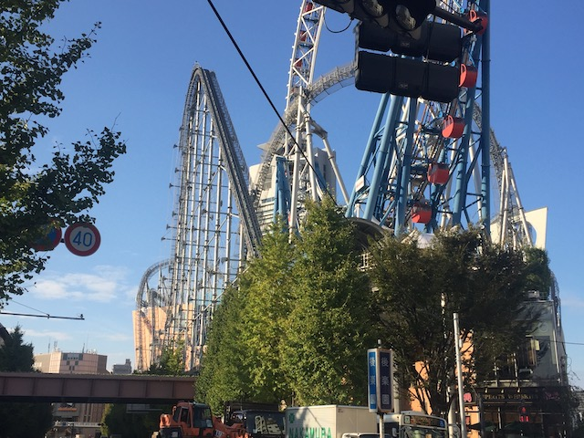
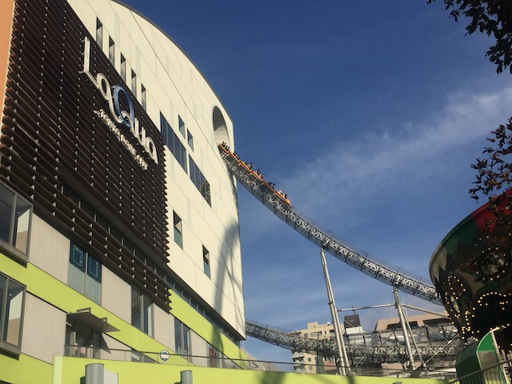
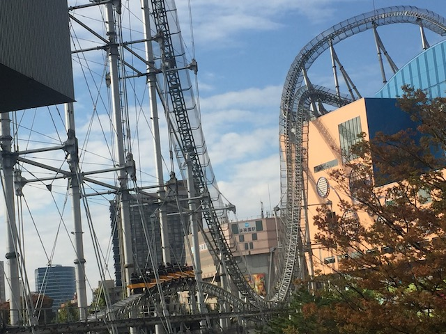
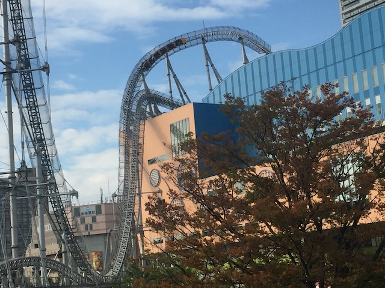
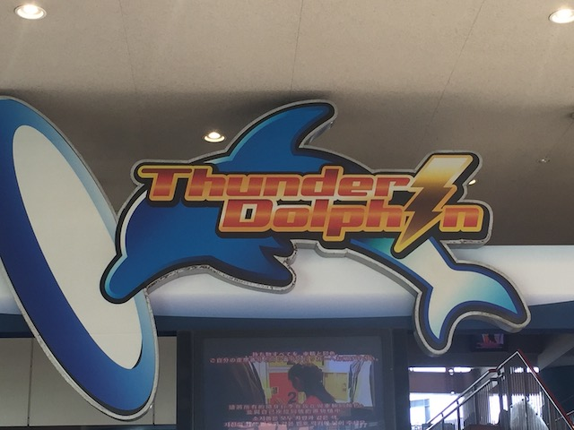
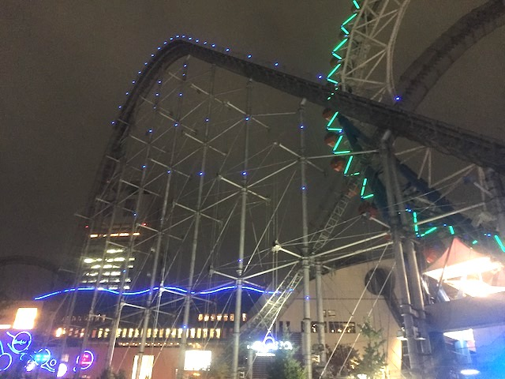

| |
Thunder Dolphin Review

We're here at Tokyo Dome City where we're going to be riding the main reason that we're here today. Thunder Dolphin. What has to be the prettiest hyper coaster on the planet. Sure, it may be the weakest Intamin hyper coaster, but it's still a lot of fun and better than several other hyper coasters. Mainly because of its location since....this thing is right SMACK DAB IN THE MIDDLE OF TOKYO!!!! Which....yeah. That is so cool. So yeah. Deal with the awful airport security theater level of zipper intolerance where they pat you down AFTER you empty your pockets in front of you (I love Japan, but f*ck that). We then hop in the car, buckle the seatbelt, pull down the lapbar, and away we go! We climb up the pretty steep lifthill. Look around, you get a fantastic view of Tokyo from up here. But again, this is a cable lifthill, so you reach the top very quickly, and before you know it, you rush down the first drop. It's very steep, very big, and just pours on the speed. Hell, it's kind of like a minature Millenium Force in a way. If it was a hyper coaster. Unfortunately, this is where the similarities between the two rides end (Millenium Force is the better ride). We then head up a big hill, roaring past the city of Tokyo, and go through a turn before dipping down onto the roof of the mall, unfortunately, losing most of our speed. LAME!!! We then go through a sort of small hill up on the roof. There's no airtime up here. And....it's kind of weird. Not sure why, but....it's fun. We then head up into a curved hill, and then go down another giant drop. We go through a hole in the building going down. Nice little visual trick. That was fun. Go through a giant banked turn. It's kind of like those overbanked turns, except....this one isn't overbanked. That's a bummer. But it's still a lot of fun. And it does thread through the parks ferris wheel. That's really cool (Shots from there would be amazing). We then shred through a tiny little hill. Sad to say, but there is no airtime right there. OK, maybe a tiny little bit, but it's super mild and NOTHING special. We then rise up another giant hill. Back onto the roof of the mall we go. And now, the ride starts to really get weird. From here, it sort of goes into this funky sort of trick track. Kind of like the Twisted Collosus pre-lift. Good for a pre-lift. But in the middle of a hyper coaster, it's just sort of awkward and makes me think "Can you think of a better element please"? Anyways, we curve out of that and head into another big drop. YAY!!!! =) Right into the brake run. BOO!!! LAME!!!! Yeah. Drops into the brake run are always a buzzkill. Nonetheless, Thunder Dolphin is a very fun coaster. The setting is amazing right in the middle of Tokyo and cruising around the mall and Tokyo Dome City. However, the amazing setting also feels like it constrains it. Like it can't leave the tight limits, so it has to resort to weird elements, like that trick track, and drop into the brake run. Honestly, Thunder Dolphin kind of reminds me of a hyper coaster that I would make in RCT in one of those scenarios where you don't have a lot of room. I know a lot of the coasters I made were very Thunder Dolphinish. So while Thunder Dolphin may not be the best ride ever, it still is a fun hyper coaster and if you're strolling in the middle of Tokyo and come across it, give it a ride. It's a lot of fun.
7/10
Location: Tokyo Dome City
Opened: 2003
Built by: Intamin
Last Ridden: November 7, 2018
Thunder Dolphin Photos








Home
|